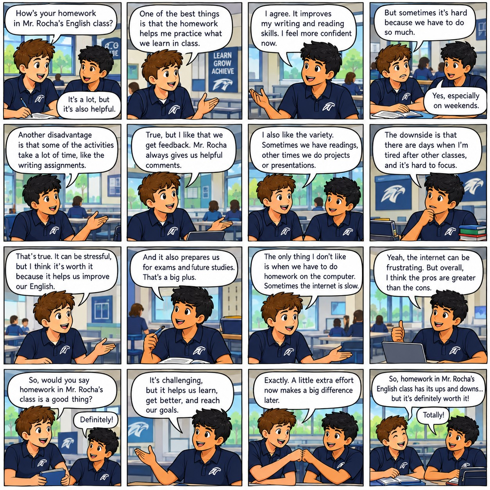

Welcome to Practice Test 3
Please review the introductory image before beginning the activities.

Video Comprehension
Watch the video carefully. Take notes and summarize what the video was about for Mr. Rocha.
Reading Comprehension: The Homework Debate
"Good morning, everyone," Mr. Gomez announced, standing at the front of the 9th-grade classroom at Liceo del Valle. "Today, Mateo and Diego will debate a topic we all care about: Should schools assign homework?"
Mateo stood up first, adjusting his uniform tie. "Thank you, Mr. Gomez. I believe that homework is an essential tool for our education. When we learn something new in algebra or history, just listening to the teacher is not enough. We need to practice on our own to truly master the concepts. Homework gives us the opportunity to review what we learned and figure out what we still need to practice. Furthermore, it teaches us responsibility and time management. In a few years, we will graduate from Liceo del Valle and go to university. If we do not learn how to organize our time and work independently now, we will struggle later. Homework is like training for the real world."
The class clapped politely. Then, Diego stood up, looking relaxed and confident.
"I understand Mateo's points, but I completely disagree," Diego began. "We already spend seven hours a day sitting at these desks. When the final bell rings at three o'clock, we should be able to focus on other important areas of our development. Many of us play sports, learn musical instruments, or simply need time to connect with our families. Assigning hours of homework causes unnecessary stress and anxiety for teenagers. Instead of helping us learn, it often makes us hate the subjects we study. Besides, modern educational research actually shows that excessive homework does not significantly improve academic performance in middle school; it just makes us exhausted. If teachers want us to practice, they should give us time to do it during school hours."
Mateo quickly replied, "But Diego, you have to admit that not everyone learns at the exact same speed. Some students need that extra time in the quiet of their own homes to process the information without the pressure of a ticking clock in the classroom."
"That is exactly why homework is fundamentally unfair," Diego argued passionately. "Some students have parents who have the time and education to help them, or they have the money to hire a private tutor. Other students have to do their homework completely alone, sometimes while taking care of their younger siblings or doing chores. It creates a massive disadvantage for those who need the most help. We need a balanced life to be healthy, happy, and ready to learn the next day."
Mr. Gomez raised his hand to pause the timer. "Excellent points from both of you. You have given us a lot to think about regarding responsibility, equity, and mental health."
Advanced Punctuation: Semicolons & Conjunctive Adverbs
Grammar Focus: CEFR C1
A semicolon (;) is used to link two closely related independent clauses (sentences that can stand alone). Often, semicolons are paired with conjunctive adverbs to smoothly transition between ideas and show the relationship between the clauses.
Common Conjunctive Adverbs:
- Addition: furthermore, moreover, additionally
- Contrast: however, nevertheless, conversely
- Cause & Effect: therefore, consequently, thus, hence
- Time/Sequence: meanwhile, subsequently, finally
- Other: otherwise, indeed, undoubtedly
Example:
The debate was fierce. Nevertheless, both students made valid points.
The debate was fierce; nevertheless, both students made valid points.
Directions: Combine the two sentences for each question into a single sentence using a semicolon. Make sure to adjust capitalization where appropriate.
Syntax Construction (C1 Level)
Directions: Drag and drop the scrambled words to form coherent C1-level sentences related to the homework debate. Click the speaker icon to hear the completed sentence.
Cohesion and Coherence
Directions: Read the essay below. Drag the 5 sentences from the bank and drop them into the correct numbered spaces [1] to [5] within the text to create a cohesive argument.
Sentence Bank
Listening Comprehension: Gap Fill
Directions: Listen to the audio. Every 15th word in the transcript below has been removed. Type the missing words exactly as you hear them.
Visual Analysis
Review the final image below before submitting your practice test.
